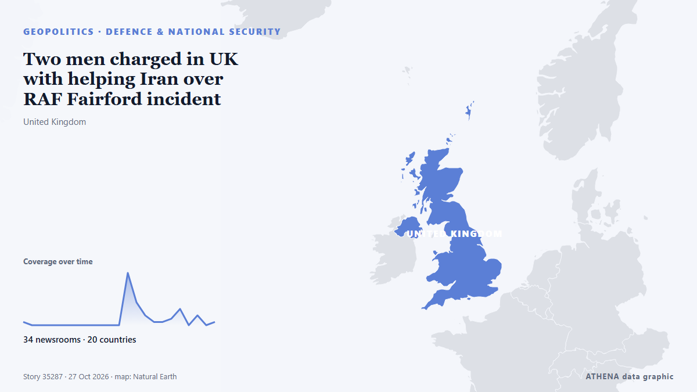

Two men charged in UK with helping Iran over RAF Fairford incident

British prosecutors said on Tuesday they had charged two men under the National Security Act over an incident last month at the RAF Fairford airbase, with police saying the two were suspected of… de Cyprus Mail
Informado de forma independiente por 34 medios de 20 países desde el 26 oct; el primero fue Belfast Telegraph; la cobertura ya se ha calmado. ATHENA califica el riesgo como moderado (2.0/10), sobre todo por la gravedad del daño descrito y su alcance geográfico y sectorial. La confianza es del 86 % (alta): lo corroboran 34 medios independientes, con una fiabilidad media de las fuentes del 76 %. Medios por país: Reino Unido (9), Estados Unidos (6), Arabia Saudí (3). Cobertura: del 26 oct al 27 oct, 22 horas.
Por qué importa: Los hechos de seguridad y diplomacia pueden alterar alianzas, comercio y mercados mucho más allá de los países implicados.
Qué ha cambiado: 40 informaciones nuevas de 34 redacciones en las 24 horas hasta el 27 oct.
Los titulares se muestran en inglés, tal como se publicaron.
De un vistazo
Seleccionado, puntuado y redactado por la metodología publicada de ATHENA. Ningún editor interviene en eventos concretos. Cómo se elabora ›
| 26 Oct 20:54 UTC | 1 |
|---|---|
| 26 Oct 21:54 UTC | 0 |
| 26 Oct 22:54 UTC | 0 |
| 26 Oct 23:54 UTC | 0 |
| 27 Oct 00:54 UTC | 0 |
| 27 Oct 01:54 UTC | 0 |
| 27 Oct 02:54 UTC | 0 |
| 27 Oct 03:54 UTC | 0 |
| 27 Oct 04:54 UTC | 0 |
| 27 Oct 05:54 UTC | 0 |
| 27 Oct 06:54 UTC | 0 |
| 27 Oct 07:54 UTC | 0 |
| 27 Oct 08:54 UTC | 16 |
| 27 Oct 09:54 UTC | 7 |
| 27 Oct 10:54 UTC | 3 |
| 27 Oct 11:54 UTC | 1 |
| 27 Oct 12:54 UTC | 1 |
| 27 Oct 13:54 UTC | 2 |
| 27 Oct 14:54 UTC | 5 |
| 27 Oct 15:54 UTC | 0 |
| 27 Oct 16:54 UTC | 3 |
| 27 Oct 17:54 UTC | 0 |
| 27 Oct 18:54 UTC | 1 |
| 26 Oct 21:00 UTC | 0.0 |
|---|---|
| 27 Oct 09:21 UTC | 1.6 |
| 27 Oct 09:36 UTC | 4.3 |
| 27 Oct 09:42 UTC | 2.2 |
| 27 Oct 09:58 UTC | 4.7 |
| 27 Oct 10:31 UTC | 2.8 |
| 27 Oct 10:56 UTC | 4.9 |
| 27 Oct 11:04 UTC | 2.7 |
| 27 Oct 11:18 UTC | 5.0 |
| 27 Oct 15:47 UTC | 5.0 |
| 30 Oct 13:53 UTC | 2.0 |
| 30 Oct 13:53 UTC | 2.0 |
Por qué estas cifras
Importancia
Riesgo
Confianza
La cobertura: quién informó y cuándo
titular tal como se publicó · abre el original- Belfast Telegraph · Reino UnidoTwo men charged under Terrorism Act following suspected firearm seizure
- Al Jazeera English · CatarUK prosecutors charge two after RAF Fairford incident
- The Guardian · Reino UnidoRAF Fairford plot ‘coordinated by handler working on behalf of Iran’
- The National · Emiratos Árabes UnidosTwo men in court charged over suspected RAF Fairford airbase terror plot
- The Straits Times · SingapurTwo men charged in Britain with helping Iran over RAF Fairford incident
- Cyprus Mail · ChipreTwo men charged in UK with helping Iran over RAF Fairford incident
- DW English · AlemaniaTwo men face UK national security charges following an incident near RAF Fairford, with police suspecting Iranian state involvement
- Manchester Evening News · Reino UnidoPair charged under National Security Act following RAF Fairford investigation
- The Irish News (Belfast) · Reino UnidoTwo UK nationals charged over RAF Fairford ‘plot to aid Iran’
- Belfast Telegraph · Reino UnidoTwo UK nationals charged over RAF Fairford ‘plot to aid Iran’
- Al-Monitor · Estados UnidosTwo men charged in UK over RAF Fairford incident allegedly linked to Iran
- Asharq Al-Awsat (English) · Arabia Saudí2 Men Charged with UK National Security Offenses Over Incident at US-Run Military Base in England
- Arab News · Arabia SaudíTwo men charged in UK over RAF Fairford incident allegedly linked to Iran
- Anadolu Agency (English) · Turquía2 men charged with national security offenses over incident at UK air base used by US forces
- Evening Standard (London) · Reino UnidoTwo Londoners charged over RAF Fairford plot 'to aid Iran'
- Chronicle Live (Newcastle) · Reino UnidoTwo Brits charged over alleged Iran intelligence plot near RAF base
- Gulf News · Emiratos Árabes UnidosTwo men charged in UK over suspected plot against US-run RAF Fairford airbase
- The New York Times (World) · Estados UnidosRAF Fairford Incident Was Coordinated By Man Acting for Iran, UK Prosecutors Say
- ABC News Australia · AustraliaTwo charged with helping Iran over RAF Fairford incident
- CNBC World · Estados UnidosMan charged with assisting ‘foreign intelligence service’ after incident at UK base used for Iran strikes
- RTÉ News · IrlandaUK base plot 'coordinated by handler' on behalf of Iran
- CBS News (World) · Estados UnidosU.K. charges 2 men linked to alleged terror plot against air base
- News of Bahrain · BaréinUK Charge Two Over Security Breach at RAF Fairford Airbase
- Türkiye Today · TurquíaUK charges two in RAF Fairford probe, one over Iran links
- CBC News · CanadáU.K. charges 2 men, accuses them of working on Iran's behalf in incident at airbase
- Punch · NigeriaUK police charge two men over US airbase security incident
- Dawn · PakistánTwo charged with security offences over plot at UK airbase used by US
- NDTV · India2 Men Charged Over Incident At UK Airbase Used By US, Police Link It To Iran
- Bangkok Post — page reader · TailandiaUK charges two men with security offences in airbase plot
- The New Arab · INTUK charges two men on suspected Iran links in RAF Fairford plot
- The Jerusalem Post · IsraelTwo men charged in UK with helping Iran over RAF Fairford incident
- The Irish News (Belfast) · Reino UnidoRAF Fairford ‘plot co-ordinated by handler working on behalf of Iran’
- Belfast Telegraph · Reino UnidoRAF Fairford ‘plot co-ordinated by handler working on behalf of Iran’
- Fox News (World) · Estados UnidosUK charges 2 men in suspected Iran-linked incident at RAF Fairford after US bombers pulled
- AzerNews · AzerbaiyánTwo British men charged under national security laws after incident near RAF Fairford
- The Hill · Estados UnidosUK charges 2 British men over security incident at US-operated air base
- Iran International (English) · IránTwo charged over alleged Iran intelligence operation at RAF Fairford
- Arab News · Arabia Saudí2 men charged with UK national security offenses over incident at US-run military base in England